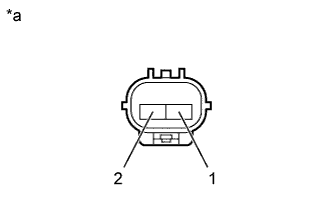

ДАТЧИК ТЕМПЕРАТУРЫ ТРАНСМИССИОННОЙ ЖИДКОСТИ > ПРОВЕРКА |
| 1. ПРОВЕРЬТЕ ДАТЧИК ТЕМПЕРАТУРЫ ATF № 2 |
|  |
Измерьте сопротивление в соответствии со значениями, приведенными в таблице ниже.
| Контакты для подключения диагностического прибора | Режим | Заданные условия |
| 1 - 2 | Всегда | 79 Ом - 156 кОм |
| 1 - масса | Всегда | 10 кОм или более |
| 2 - масса | Всегда | 10 кОм или более |
| *a | Устройство с отсоединенным жгутом проводов (датчик температуры ATF № 2) |
| Температура ATF | Заданные условия |
| 20°C (68°F) | 10,3 - 13,9 кОм |
| 120°C (248°F) | 0,58 - 0,65 кОм |